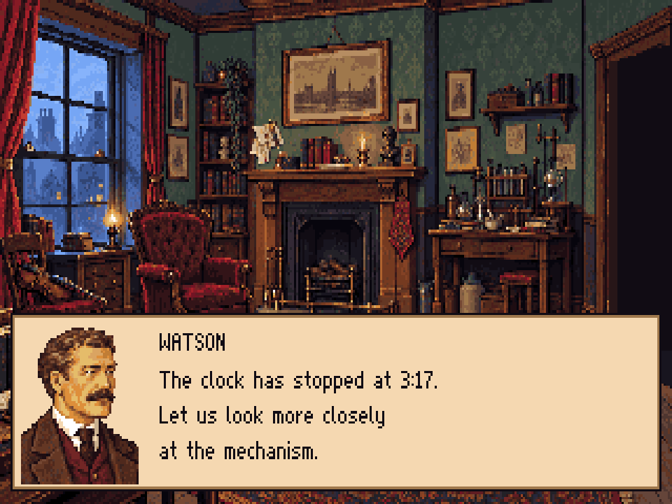
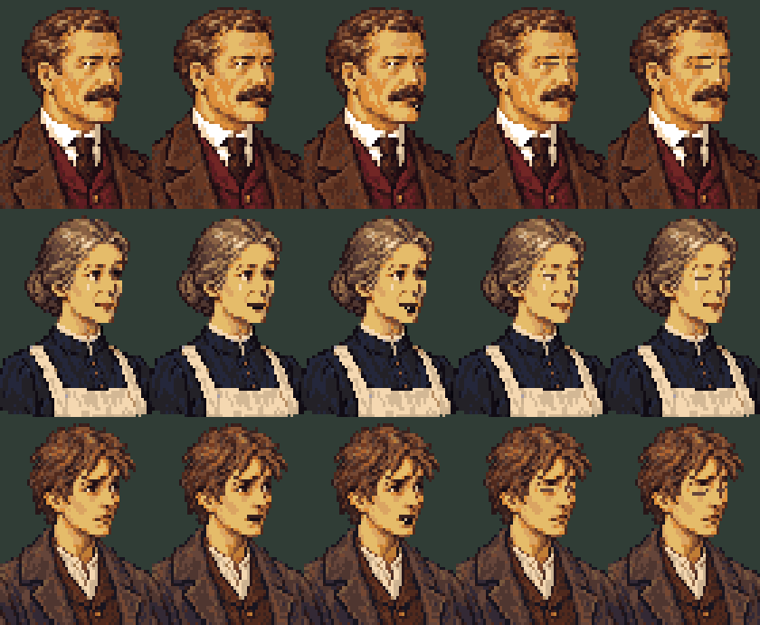
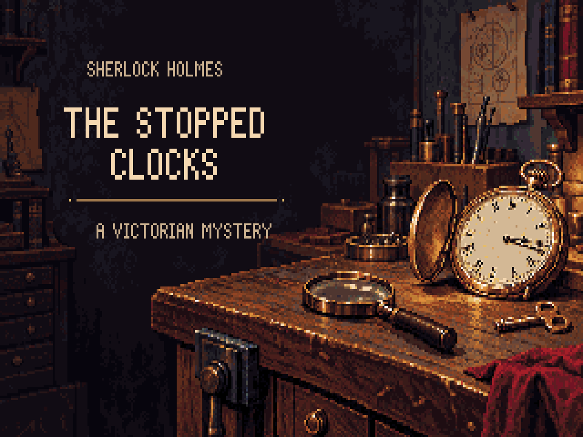
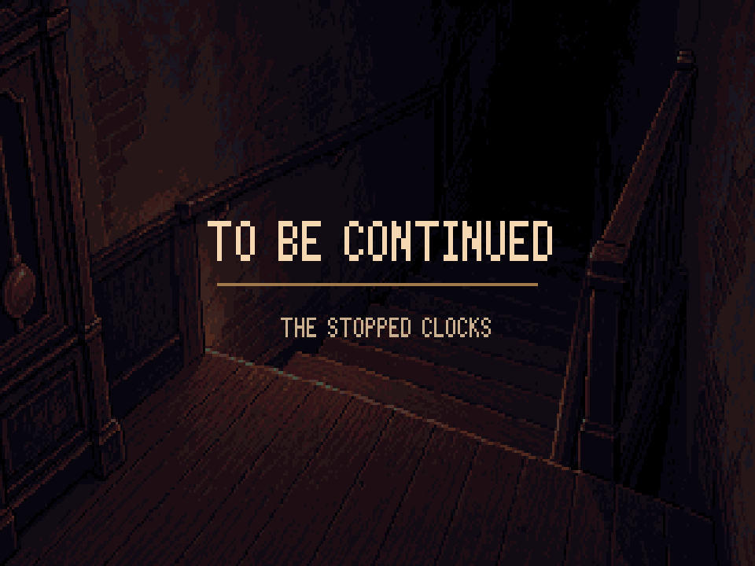
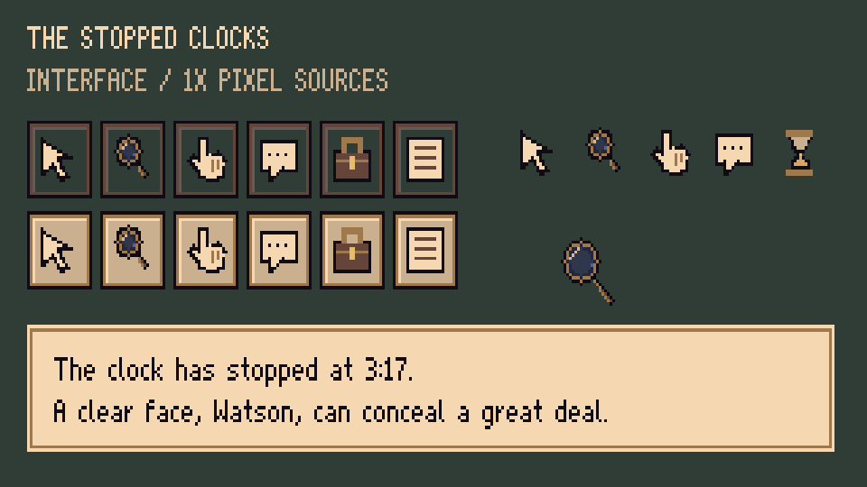

Portraits, Baker Street, the hidden stair, title cards and interface. A first art review pass using the shared 64-colour palette and classic adventure pixel resolution.
Updated portraits: Fixed portrait masters, ornate frames and four speaking characters — open r23. The unframed r18 comparison below is retained as an earlier study.
Each portrait has one fixed bust. Only the mouth and eye overlays change; hair, costume and head shape stay fixed.
Loading portrait cels…

Layout study with sample dialogue; actual positioning belongs to the engine integration.

Mouth and eye regions · Fixed master hashes · Doyle and costume references
The blockouts record the intended geometry. Paintings still need a room-scale review; the guides do not certify every painted edge. Floor routes and foreground depths are proposals for the engineer to fit in-game.
Street Blender source · Stair Blender source · Room workflow and handoff


Lettering is on separate editable layers. The end card reuses the stair so the teaser ends in the same place.

Parchment boxes, dark ink and a brass border. Five cursors, six action icons in normal and selected states, the inventory lens, and a readable 8×12-cell dialogue font.